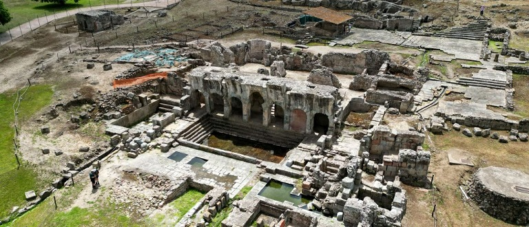
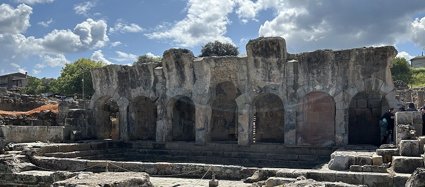
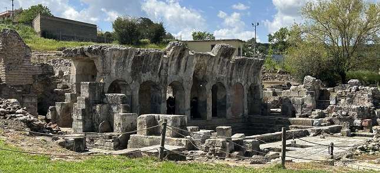

|
Forum
Traiani, Fordongianus
Las Termas de Forum Traiani en
Fordongianus.
Sus aguas han sido consideradas desde la antigüedad sagradas y ya eran
utilizadas para curarse.
Se localizan a orillas del río Tirso, donde estuvo la antigua ciudad de
Forum Traiani
Fordongianus debe su nombre a la
antigua Forum Traiani, la ciudad romana más importante en el interior de
la Isla.
En el siglo I fue constituido por Trajano como un centro de mercado
entre las comunidades y poblaciones del interior de Cerdeña
Forum Traiani se convirtió en un destino popular para cultivar la salud
física, mental y los placeres de la vida.
Destacan sus arcadas, salas y piletas, sigue siendo impresionante hoy en
día y da una idea de cómo debió de ser en época romana.
Consta de dos establecimientos:
- El primero de ellos del siglo I y se utilizaba con fines terapéuticos.
Fue alimentado por las aguas termales, que todavía brotan in situ a una
temperatura de 54 ° C. Este establecimiento, fue construido
originalmente con grandes bloques de traquita, con claros signos de
expolio a lo largo de los siglos.
- El segundo establecimiento data del siglo III y está conectado con el
primero por una escalera que se abre al pórtico de la natatio.
Se utilizaba para el cuidado y la higiene del cuerpo y se calentaba
artificialmente. las clásicas termas con su "frigidarium", "tepidarium"
y "calidarium".
- Aguas arriba del complejo termal, también se puede ver un sistema de
pozos y aljibes abastecidos en parte por el acueducto romano, que
distribuyen el agua a las distintas cámaras termales a través de una
sofisticada red de canales.
De nuestra visita al yacimiento nos sorprendió la gran piscina
rectangular que en época romana estuvo cubierta con una bóveda de cañón
y rodeada de pórticos donde la gente se detendría y descansaría entre
baño y baño; y el agua que puedes tocar a 54º C, impresionante.
A ambos lados se encontraban las piletas de captación y mezcla y el
Nymphaeum, un gran pileta rodeada de nichos para la exposición de
estatuas y cippus votivos, era el espacio sagrado para el culto de los
poderes curativos de las aquae calidae......Alrededor del
establecimiento se construyeron viviendas para alojar a los visitantes,
edificios públicos para actividades civiles y cultos funerarios.

Con la caída del Imperio Romano, las
termas se fueron abandonando paulatinamente. En la Edad Media se una
parte del complejo termal se desmanteló para construir lugares de culto.
Se salvaron las partes del establecimiento que eran estrictamente
terapéuticas.


|